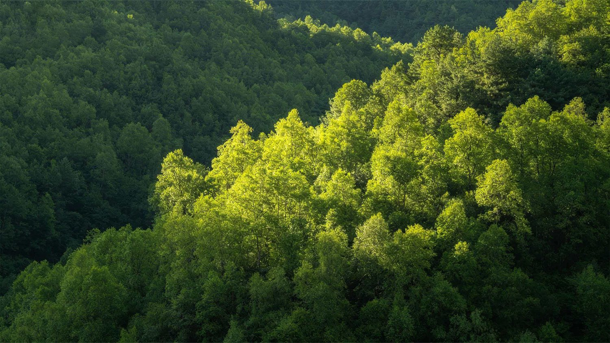

石漠化治理公益科普
首页
公益科普
典型案例
数据监测
价值实现
生态故事
公众参与
关于本站

动态生态数据监测
从长期变化到区域差异，读懂石漠化治理的真实进展
01
全国石漠化变化
面积 · 盖度 · 缩减速度
数据来源：
2011年石漠化状况公报
、
2016年公报
、
2021年调查结果
数据来源：
2016年公报
、
第四次调查结果
02
生态状况与区域变化
2016—2021
数据来源：
2016年石漠化状况公报
、
第四次石漠化调查结果
数据来源：
贵州省林业局
、
云南省石漠化状况公报
、
国家林草局四川治理数据
03
川滇黔区域监测
11 个调研地区
云南 4 地
贵州 3 地
四川 4 地
数据来源：
国家林草局第四次石漠化调查结果
近年治理进展
最新公开数据